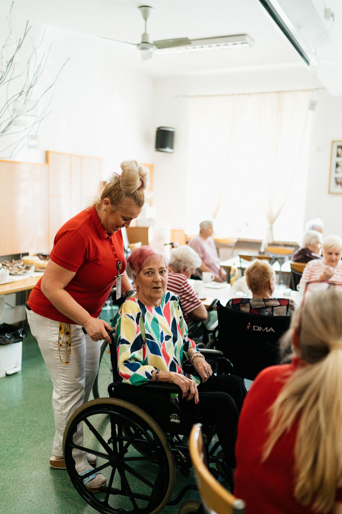

As a newly launched agency, we're building our public case study library from live client work. The scenarios below are illustrative examples of how we approach common challenges in the care sector, based on our experience in digital marketing. Ask us for current client references directly.
Challenge: An incomplete Google Business Profile and a website that took over 8 seconds to load on mobile, resulting in enquiries going to better-ranked competitors.
Approach: Full profile rebuild, review generation system, and a new mobile-first website with a simple enquiry form above the fold.
What good looks like: Stronger local map-pack visibility and a shorter path from search to enquiry.

Challenge: Enquiries coming through several channels (phone, web form, Facebook) with no consistent follow-up, leading to leads going cold.
Approach: Centralised CRM with automated follow-up sequences and a single enquiry dashboard for the office manager.
What good looks like: Fewer missed follow-ups and a clear, auditable enquiry trail for CQC purposes.
Challenge: Strong local reputation but almost no online visibility beyond word of mouth, limiting growth.
Approach: Local SEO foundation, content calendar built around common patient questions, and a modest paid search campaign.
What good looks like: A second, digital channel of enquiries alongside existing referrals.
Book a free audit and we'll show you the specific gaps in your current setup.